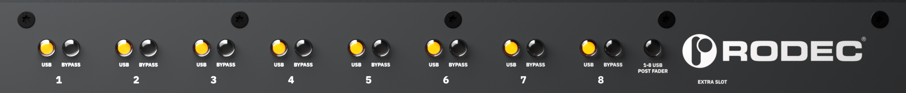
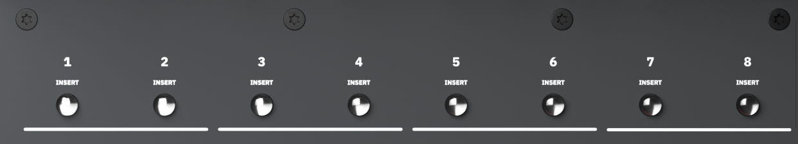

Input Selection and channel insert

Input Selector Buttons (Channels 1–8)
The MX Modular mixer includes input selector buttons for channels 1–8, allowing you to easily switch between analog and digital audio sources. This feature provides flexibility for integrating external hardware and computer-based audio into your workflow.
Functionality:
- Each channel (1–8) has an input selector button labeled USB.
- Button States:
- Unlit (Up): Audio is sourced from the analog DB25 connector on the back panel. This is ideal for external hardware like synthesizers, drum machines, or other outboard gear.
- Lit (In): Audio is sourced from the USB connection, receiving digital audio from the computer. This is perfect for working with DAW stems, virtual instruments, or other computer-based audio.
USB Post Fader Button (Channels 1–8)
The MX Modular includes a USB Post Fader button for channels 1–8, offering precise control over the audio signal sent to the computer via USB. This feature allows you to choose whether the recorded signal is affected by the mixer’s fader and mute operations.
Functionality:
- Button Label: 1-8 USB Post Fader
- Button States:
- Unlit (Up): Pre-Fader Signal:
- Audio is sent to the USB interface directly after the 500 slot.
- This signal bypasses all fader adjustments, crossfader movements, and mute operations, ensuring a clean, unaffected recording of the channel's processed signal.
- Lit (In): Post-Fader Signal:
- Audio sent to the USB interface includes fader movements, crossfader actions, and mute operations.
- This is ideal for recording final mixes with live adjustments and performance elements.
- Unlit (Up): Pre-Fader Signal:
Use Case:
- Use Pre-Fader Mode when you need an unaffected, raw signal for post-production or further processing in your DAW.
- Use Post-Fader Mode to capture a final mix, including all live adjustments, as performed on the console.
This button provides ultimate flexibility in routing and recording, catering to both pristine signal capture and live mix recordings.
Bypass Functionality for 500 Series Slots (1–8)
Each of the 1–8 500 series slots features a bypass button for enhanced flexibility. This button allows the audio signal to pass directly to the fader section, even if no module is inserted into the slot. When a module is inserted, engaging the bypass button routes the unprocessed signal directly to the fader, bypassing the module’s processing.
Important Note:
Even when bypassed, the signal is still sent in parallel to the input side of the module. This means that high-gain modules, such as microphone preamps, can still affect the unprocessed signal due to their input impedance and gain settings.
When bypass is on, do the following on the Rodec M-501:
- Ensure the PAD is enabled
- Disable Hi-Z inputs
Make sure you know and test which settings your 3d party preamps may need.
Channel Insert Functionality (Channels 1–8)

Each of the channels 1–8 on the MX Modular includes a channel insert feature, allowing integration with external processing gear, such as compressors, equalizers, or other effects. This feature provides flexibility in routing and signal control for both recording and live scenarios.
Key Features:
- Insert Send and Return:
- Insert connections are available via the DB25 connectors on the back panel.
- The send signal is always active, meaning you can use it to route audio to an external device or even send it to another mixer independently of the return.
- The return signal is activated or deactivated using a dedicated insert button located in the button row above the fader section.
Button Functionality:
- Unlit (Up): The insert return is deactivated, and the signal bypasses the return path. However, the send signal remains active and can still be routed to an external device.
- Lit (In): The insert return is activated, routing the processed signal from the external device back into the channel.
Signal Path:
- The insert point is located just after the 500 module in the signal chain, but it is pre-fader.
- This ensures the processed signal is unaffected by fader adjustments, crossfader movements, or mute operations, providing a clean integration point for external processing.
Use Cases:
- External Processing: Easily integrate outboard gear into your workflow by activating the insert return.
- Send-Only Applications: Use the always-active send to route audio to another mixer or external processing chain, even if you’re not using the return path.
This versatile insert functionality enhances the MX Modular’s routing capabilities, making it a powerful tool for both live and studio environments.